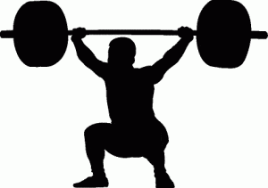
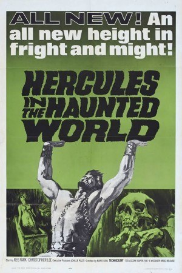
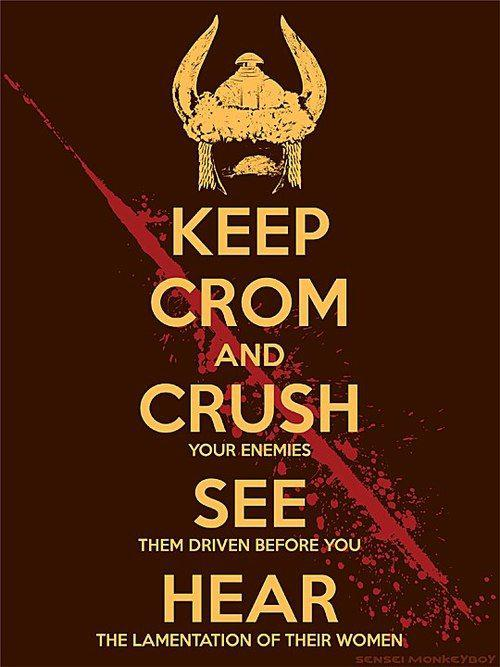

< < < Back
6 Lessons For Building Your Body And Mind – Return Of Kings
My article this week is not directly about the mechanics of fitness, but rather a book that explains, among other things, the mindset needed to make yourself fit. The Education of a Bodybuilder is at its core an autobiography of Arnold Schwarzenegger from birth to about 1980. Let’s get something out of the way at the beginning of this review: this cover is horrendous. Needless to say, this a book that risks everybody in a 100-foot radius trying and failing to restrain their laughter at how you’re reading a book about a glistening muscleman in a black speedo.
However, this is a minor setback that shouldn’t stop you from reading an excellent book, written by a highly accomplished human being, that primarily seeks to answer the age-old question of why men bother to lift weights, as well as having relevant advice for anyone interested in fitness, from the total novice to the seasoned veteran, or anybody interested in improving their life at all:
1. Try a lot of things before something “pops”

Arnold states that he was always athletic, and thus cottoned to various sports in his childhood and adolescence. He played team sports for a few years, before deciding that he “disliked winning a game and not receiving recognition for [his] labors” (a somewhat arrogant attitude that he freely admits to, and is explored in depth in the book). He does individual sports such as swimming, track, boxing, but none really “clicked.”
It was only when he started to lift weights for the other sports that he had something click, that he knew what he wanted to dedicate himself to:
I still remember that first visit, I had never seen such things. The men were huge and brutal. And there it was before me-my life. It seemed I suddenly reached out and found something…I had found the thing I wanted to devote myself to (pg. 12)
2. Find inspiration anywhere—positive or negative feedback

Arnold’s childhood film of choice
As this book is a biography of Arnold from birth until his late 20s, the readers gets an in-depth view of what inspired him before and immediately after he starts formally training-and, speaking personally, it’s an eclectic mix that resembles my own catalysts for getting into fitness, and likely many others’ as well:
In his early teen years, when his decision to start bodybuilding “pops,” he is initiated into this strange world of brutality and vigor by his older peers, who essentially teach him the basics and serve as immediate mentors for him. Concurrently with this, he discusses his love of B-Movies starring sportmen-turned-actors, one in particular serving as a different sort of mentor figure-a tantalizing ideal that he fanatically strove for:
[Reg Park] looked so magnificent in the role of Hercules I was transfixed. I studied every move he made, every gesture. Sitting there watching…he was always in front of me. The more I focused on his idealized image and worked, the more I saw it was possible for me to be like him.” (pg. 15).
The aforementioned British bodybuilder becomes something of a figure half paternal, half mythological hero to the young Schwarzenegger, and Arnie freely admits that he was a hero worshipper as a youth. Indeed, his relationship with Park, as a sort of modernized Campbellian “deity father” who must be struck down and then atoned with, seems to be better than his relationship with his actual biological father.
And there lies another aspect of Arnold’s inspiration, one he is not afraid to admit: his youthful anger towards others served as a sort of “negative feedback motivator,” and it was just as strong as the positive role models: His own parents disparaged his desires well after he started to make a living from bodybuilding (“He felt I wasn’t normal-and he was right.”, page 20), by his estimate about half of his fellow youths mock him and express incredulity towards the pursuit, and, as he reveals in a later chapter, a homosexual owner of a Munich gym franchise and sponsor of several international bodybuilders seeks to sexually extort him, a request which is declined.
Rather than succumbing to any of this, he instead uses his anger and feelings of disrespect to train harder and thus earn accolades without losing self-respect. These coarse feelings, as powerful as they are, have a bit of a drawback:
3. Fitness, or anything else that requires dedication, can drive you to madness and isolation

An aspect of the book that is sure to trigger SJW termagants is Arnold discussing how the training and lifestyle affected him mentally, as well as physically: fanatic dedication to his task and the older men at the gym bringing girls back to the gym for the boys to share gave the young man a decidedly… animalistic view of women:
Women were sex objects, I saw the others using them in this way and I thought it was okay. We talked about the pitfalls of romance and how it hurt your training. They were my idols so of course I agreed… I was convinced a girl couldn’t understand what I was doing, and that we could never communicate equally. I needed to be in the gym, not with them-so I’d pick them up, fuck them, and never see them again. It wasn’t until four years of training had gone by that I was capable of meaningfully communicating with a girl (p. 25)
Indeed, Arnold just…stops showing emotions at all for a period of several years, which further fractures his relationship with his family: “I couldn’t afford to have hurt feelings before competitions, I needed tranquility. I missed out on the emotional teen thing, I feel I benefited in other ways, so it all balances.” (pg. 28). The book was published in 1980, and he states that, since retiring from bodybuilding competition, he has essentially had to train himself to express emotions again, using the same discipline he learned from physical training.
To an extent, I feel that being truly great at anything requires a little bit of madness, a little bit of abnormal behavior, and oftentimes it is something that the people around this great person cannot understand. One doesn’t even have to be a world-beater to get this reaction. When a skinnyfat 14-year-old me started to get into fitness, though obviously not being involved in teenage gym orgies as Arnold was, it nonetheless alienated me from my peers as well, who were content to drink and smoke themselves into a stupor and let their youthful fitness waste away. And much like Arnold, I channeled my feelings of teenage angst into working harder
Just as the author had to train himself to feel emotions, I had to train myself to be capable of speaking to women, and, though difficult, it was successful, as I managed to lose my virginity at the age of 20 (this was a couple of years before ROK existed). Both Arnold’s great successes and my smaller successes reflect a theme of the book, related to this one, that was most certainly unintended by its author:
4. The “Riddle of Steel” is relevant to all men

As a longtime fan of Schwarzenegger’s oeuvre, I’ve always felt that his breakout role, Conan the Barbarian is still his best work. “The Riddle of Steel” is a philosophical concept that I have held in my life, and conveyed to others when I train them-as I understand it, the film’s position on the riddle of steel is that steel alone is not the alpha and omega of strength, nor is strength of muscle. Instead, strength comes from within, and from inner strength comes strength of arm and strength of steel.
To that, both Arnold and myself would add a corollary: that through any sort of hard physical training, you will also inadvertently discipline yourself both mentally and emotionally (in other words, the types of strength all feed off each other). And with mental and emotional stability, you will be capable of doing something that most find very difficult: honestly assessing your abilities and failures: “I was always honest with weak points; I feel the key to success is to be honest about your weaknesses”. (pg. 67)
More specifically related to Conan, compare this quote from Education: “Helmut insisted that since I had achieved things, I shouldn’t thank God, I should thank myself, and if bad things happened, I would have to get myself out of it” (pg. 28) with this scene from Conan the Barbarian.
The parallels are striking for a man that had never heard of Conan the Barbarian until he was cast in the film adaptation. Beyond the philosophical insights, there is of course much advice on the practical side of training and business. About 40% of the book is advice on training, with the slight majority going to his life story.
5. Keep it simple
After explaining why people should train, he goes into his training routine. As the title of this section would imply, it is relatively simple, starting with bodyweight exercises, or “freehand” as he calls them, and moving into a weight program of heavy, compound lifts. As a lark, Arnold entered the German national Olympic style weightlifting competition in 1966 and won it), with a small amount of isolation exercises-due to a bodybuilder’s goal of having bodily symmetry and proportion.
I too have always felt that, when learning any sort of skill, physical or otherwise, one should train hard, but oftentimes the best recourse is to keep it simple. Rather than doing a million exercises, just do a few important ones, and do many repetitions.
6. Take opportunities, leave your comfort zone, and always be competing
Or, to quote a Russian proverb, “he who is afraid of bad luck will never have good luck.” It sounds simple enough, but it bears repeating: Arnold took a series of enormous chances-going AWOL from the army to enter Mr. Europe, leaving Austria to live in Munich, going to London and then America to enter Mr. Universe, starting a business venture with Joe Weider, getting into films, und so weiter. Of course, merely taking chances alone doesn’t guarantee success, effort and training are a requirement, but the fact remains if you want to succeed, you have to leave your comfort zone. Again, looking to myself, if I hadn’t conquered my own fears and taken risks in my life I’d be a morbidly obese virgin living with my parents.
In a related note, the two of us agree that placing yourself in competition with others is the best way to force yourself to “go the extra mile”-an interesting method of doing so that he suggests is to compete in lifting with your training partner, and make little wagers to make it interesting. Try it for yourself.
Conclusion
In the end, this book gives worthwhile advice to any man, not just “gym rats.” Indeed, the only bit of advice I questioned at all was Arnold’s advocacy for eating six meals a day—while it is indeed an efficient way for a bodybuilder to add mass to his frame, I find the concept of grazing like a fat cow impractical for anybody that isn’t in a bulking program.
Regardless, this is a book you can, and should, buy cheap. It’s 30 years old, only about 200 pages, and it’s still better than the vast majority of self-help books you’ll find.
…Plato said man should strive for a balance of mind and body, without a well conditioned body, the mind would suffer. I believe that in myself. Strength, confidence, a firsthand knowledge of the rewards of hard work and persistence, can help you attain a new and better life. Regards, Arnold
Read More: The Education Of A Bodybuilder By Arnold Schwarzenegger